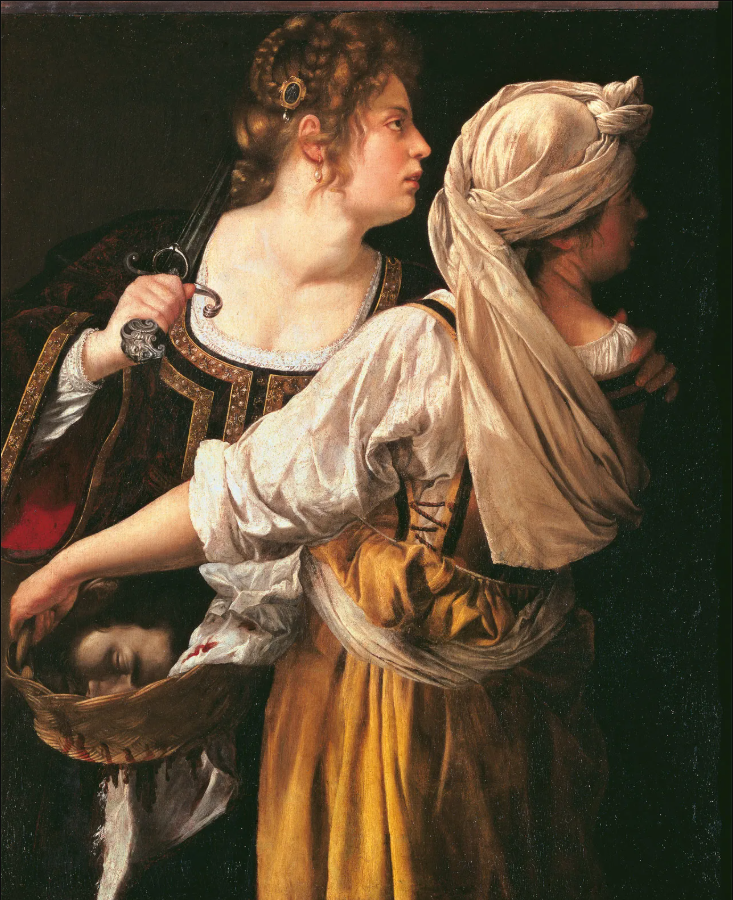

Mary Anning
An English fossil collector and paleontologist who became known around the world for her discoveries.

Pioneer
Scientist
Born: 1799
Died: 1847
Discovered Ichthyosaur
Artemisia Gentileschi was an Italian Baroque painter. Gentileschi is considered among the most accomplished 17th-century artists, initially working in the style of Caravaggio. She was producing professional work by the age of 15.[4] In an era when women had few opportunities to pursue artistic training or work as professional artists, Gentileschi was the first woman to become a member of the Accademia di Arte del Disegno in Florence and she had an international clientele.[5][6] Gentileschi worked as an expatriate painter in the court of Charles I of England from 1638 to 1642
Henrietta Lacks’ legacy is eternal. Born in Virginia in 1920, Lacks worked as a tobacco farmer for most of her life until she was diagnosed with cervical cancer. Without her knowledge or consent, a sample of her cancer cells was taken by a doctor. Researchers who studied this sample found that her cells kept reproducing, ultimately making them immortal. Lacks died in 1951, but to this day her cells – known as “HeLa” cells – continue to be studied around the world. Her cells have led to major scientific discoveries regarding the growth of cancer cells and the effects of drugs on the human body. Her cells have also contributed to the development of the polio vaccine. Lacks’ story has brought into question the ethics of patient privacy and has exposed the mistreatment of people of color in healthcare.
Hedy Lamarr, born in Vienna in 1914, was an actress and inventor. In 1937, Lamarr escaped her controlling husband and Nazi Austria and moved around Europe before crossing over to the United States. While flourishing as a Hollywood starlet, Lamarr also exercised her passion for innovation. Working alongside George Antheil, Lamarr created the “Secret Communications System”, which was intended to switch radio frequencies amidst the chaos of World War II so that enemies could not decode messages. This technology was later adopted by the United States Navy, and serves as a building block behind the wireless communication of today’s cell phones, GPS navigators, and Wi-Fi.
Patsy Mink became the first woman of color elected to the House of Representatives in 1964. The daughter of second-generation Japanese immigrants, Mink was met with racism when she attended the University of Nebraska. With a knack for public service, Mink mobilized students, employees, and alumni to successfully fight against the university’s segregation policy. After completing her undergraduate education and earning a law degree, she ran for the House of Representatives. She was in office from 1964-1977, and then again from 1990-2002. One of Mink’s crowning accomplishments is the Title IX law, which she co-authored with Senator Birch Bayh. Following Mink’s death, Title IX was renamed the Patsy T. Mink Gender Equality in Education Act.

Faith Spotted Eagle is a Native American activist, peacemaker, educator, therapist, and self-proclaimed “hell-raiser”. A member of the Yankton Sioux Nation in South Dakota, Spotted Eagle is a recognized leader of the fight against the Keystone XL and Dakota Access oil pipelines. In 2016, she became the first Native American to receive an electoral vote for president (though she was not running). Spotted Eagle is deeply committed to her community: she’s a founding member of the Brave Heart Society, she helped develop the first Native women’s shelter, and she provides PTSD therapy for veterans and tribes. A longtime advocate of environmental justice and equality, she told the LA Times, “The resistance has always been in my blood and spirit since I was born.”
Gladys Bentley was a non-conforming icon of the 1920s. Born in Philadelphia in 1907, she moved to New York at age sixteen after being harassed in her community for dressing in boys’ clothes and having feelings for her female teacher. Bentley heard that Harry Hansberry’s Clam House in Manhattan was looking for a male pianist – so she dressed in a tuxedo, auditioned, and got the gig. She was a multi-talented musician who also regularly performed as a blues singer and was known to belt songs about male exploitation and domestic abuse. A black lesbian who often cross-dressed, Bentley famously pushed the boundaries of gender and sexuality while creating spaces of inclusivity. Today, she is recognized as one of America’s most successful black entertainers of the 1920s.
| Women and the time they lived | Fun Facts | |
|---|---|---|
| Artemesia Gentileschi | 17th Century | She was the first woman to be admitted to the Accademia di Belle Arti in Florence |
| Henriette Lacks | 20th Century | Harvested cells became the first immortal human cell line |
| Hedy Lamarr | Helped lay groundwork for modern wireless technology | |
| Mary Anning | 19th Century | Known for her fossil discoveries in Lyme Regis |
| Source: The Institute of Historical Women | ||
There are countless women that history has forgotten. Please submit your information to help them find their true place in now!